Examine eyetracking data for an individual participant, and work out how to do drift correction
Overall the exampleAnalysesWithGoodFixator report from that file showed that for at least 7 trials out of 120, the eyetracker is way off, with X off by 90 pixels. Otherwise, things were reasonable esp. after first 500 ms when fixation period starts. But by reasonable, I mean that drift or something means that X and Y was off by up to ~20 pixels. For the weird 7 trials, there weren’t many fixations so I should check how much missing data (“blinks”) there was, maybe that helps explain why those trials were weird.
Do basic checks
Loading required package: RcppProgress
Loading required package: rlang
Attaching package: 'dplyr'
The following objects are masked from 'package:stats':
filter, lag
The following objects are masked from 'package:base':
intersect, setdiff, setequal, union
Read in an EDF file,
EDF file name: A421.EDF in directory dataForTestingOfCode
Trials count: 120
For Momo’s program downstairs, the first trial doesn’t work for some reason, so for her we should throw away the first trial. (If don’t want to do that, set to FALSE)
throwAwayFirstTrial =FALSEthrowAwayLastTrial =FALSE#Sarah ran into an EDF file where the last trial lasted 10 min, so somehow the eyetracker got stuck on
Check which eye was tracked, and create new x and y columns based on which eye it was.
The right eye was tracked exclusively.
Graphs
Assuming screen width is 800 pixels and screen height is 600 pixels,
check mean x in and mean y in samples (raw eyetracker record of where person was looking) to see where it is relative to screen center.
Average eye position was pretty close to screen center, deviated on average: (x,y) (-21.9,-6.1)
Plot average eye position in each quartile of trials
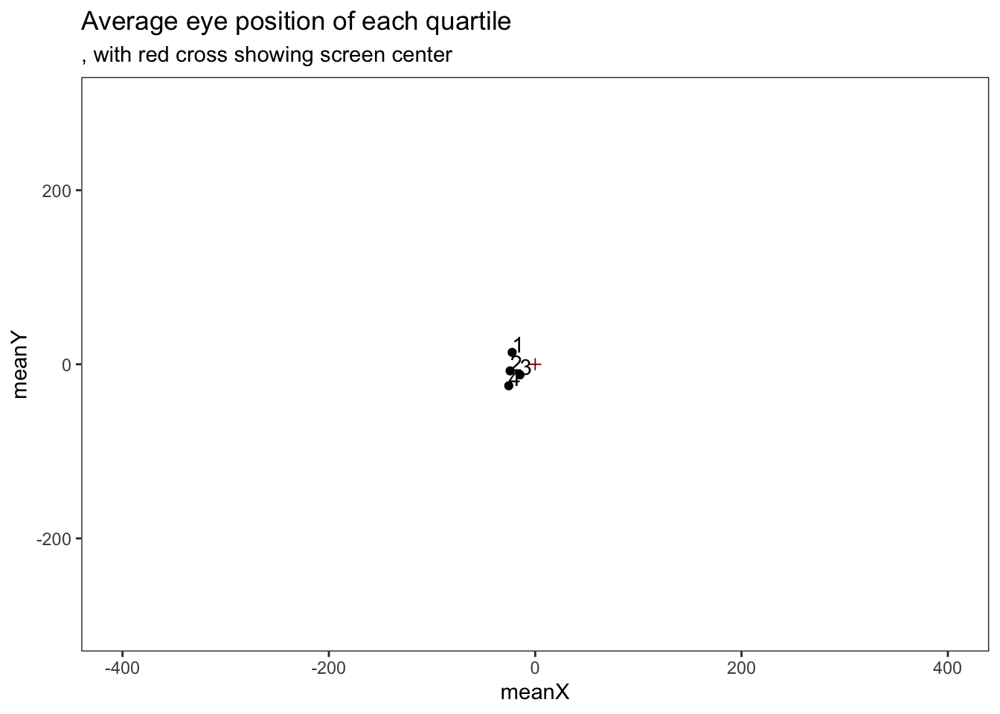
#Calculate time by which it matters that they're fixating, which is when targets are no longer cuedfixationInterval =c(800,1300)trackingExtraTime =1200#ms, which is how long the blobs are cued, but that's after the fixation intervaltrialMinTimeBeforeCuesOff =min(fixationInterval) + trackingExtraTime#Can also look at additional columns in later versions of the program, that show fixationInterval
Just look after first 2000 ms, because first 800 ms, up to max of 1300 ms is fixation, then blobs cued for rtrackingExtraTime`ms so really I don’t have to exclude until after800+1200=2000 ms.
For participants after 1 June, added record of fixatnPeriodFrames, so for them only have to exclude after fixatnPeriodFrames*refreshRate + 1200.
From previous exploring, I know that lots of occasional bad stuff happens over the first 100ms.
Plot to see how average fixation x changes over time across trials, after minimum fixation interval, to look for possible drift (gradual trend of calibration getting more and more wrong).
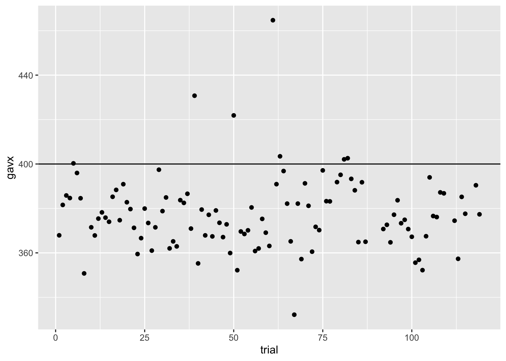
Plot to see how average fixation y changes over time across trials, to look possible drift (gradual trend of calibration getting more and more wrong).
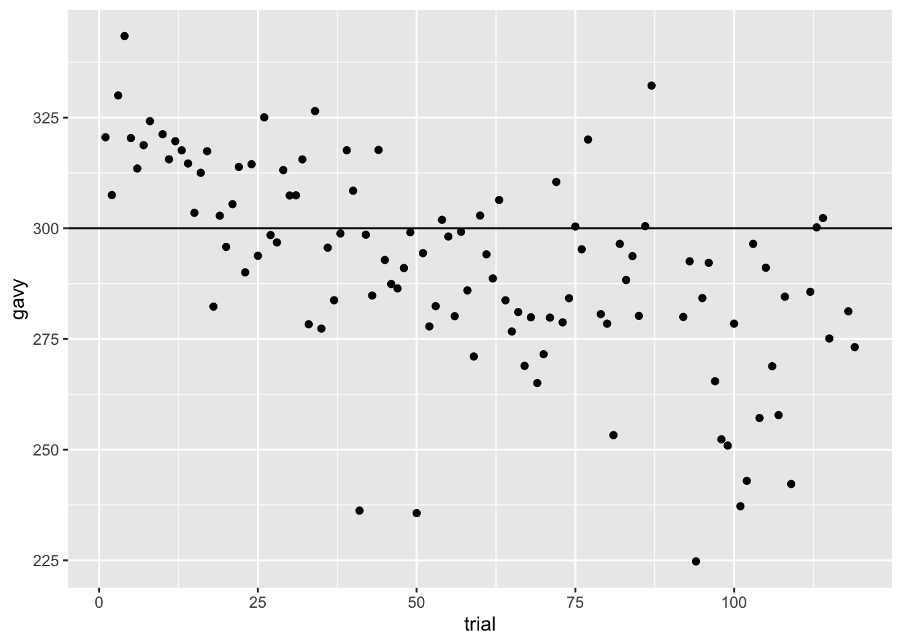
Look for possible drift (gradual trend of calibration getting more and more wrong) of average fixation position across trials with 2D plot.
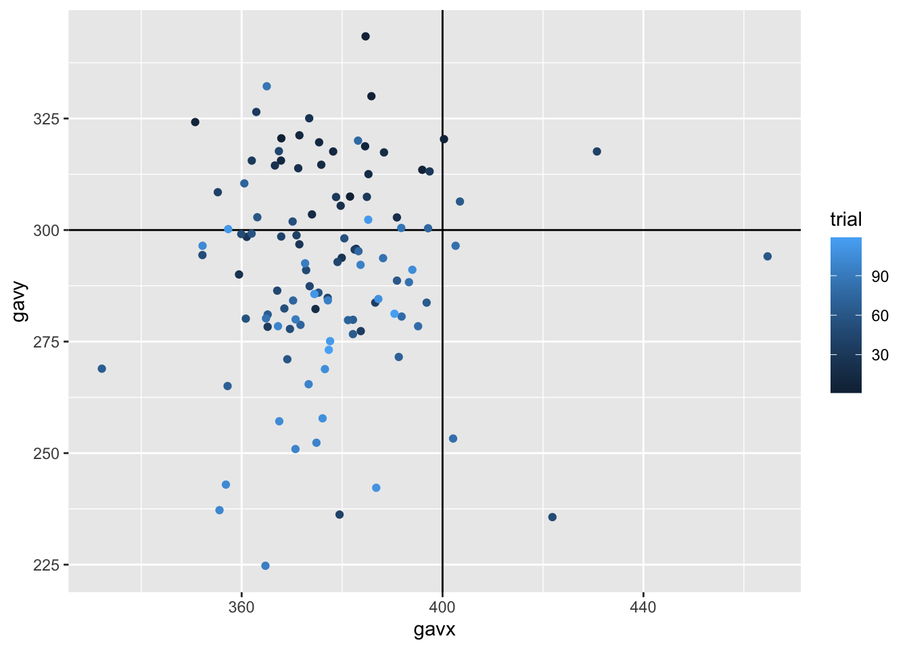
Will implement drift correction, but need to decide on limited interval at beginning of trial to assume gaze is central.
Look at x and y traces of trials for first 50 trials
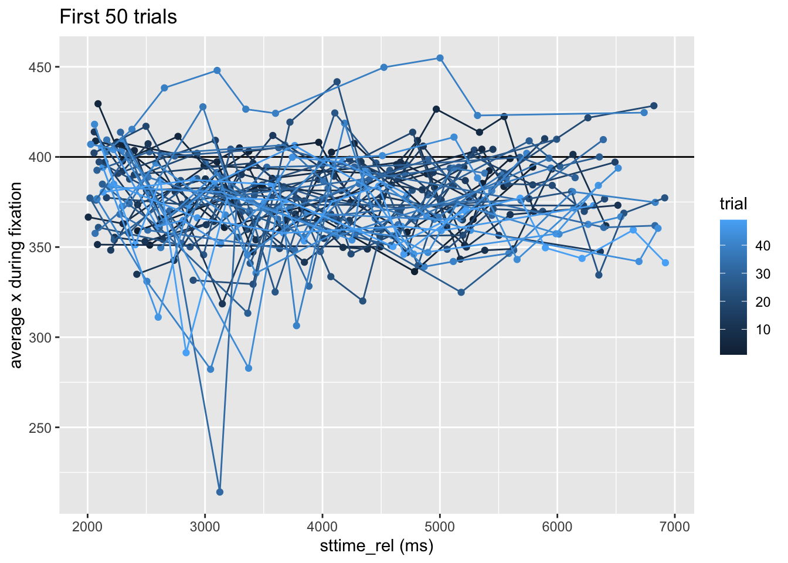
Divide trials into four groups (quartiles) and plot for each
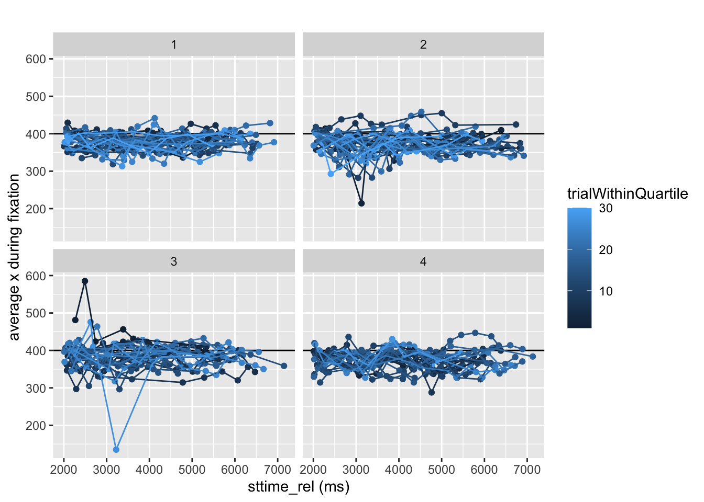
Do it for y
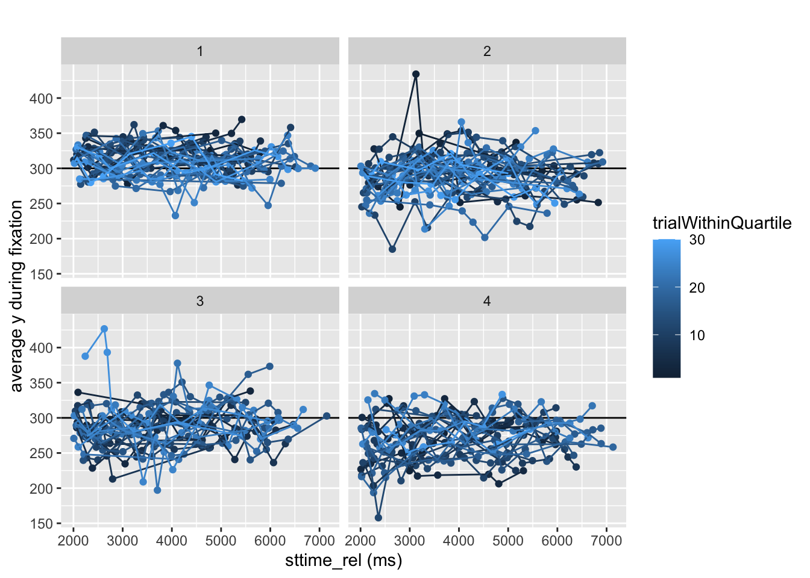
Calculate exclusions before drift correction
This is mainly to check there is no discrepancy with summariseFromEDF.R
[1] 0.1376147
Look at first portion of trial before the targets are highlighted for example, when it doesn’t matter where participants are looking but we could use some of that portion for drift correction if we trust the participant.
For young/old this is very OK because it doesn’t matter where the participants are looking as long as they don’t move their eyes, whereas for Momo it’s not so kosher because absolute value of the deviation is important.
Plot distance from fixation over time. Actually show first period where cues are still always on to see if that is the most reliable time of fixation.
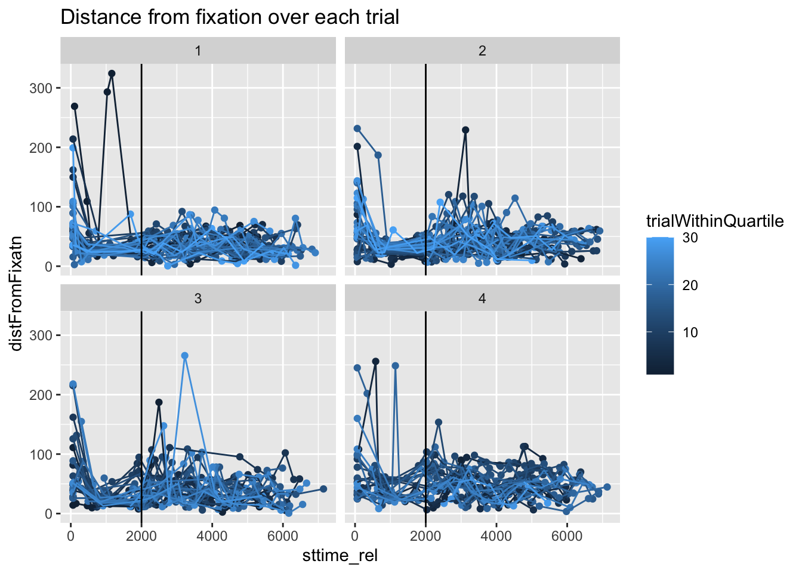
The first 300 ms or so look very bad, so exclude that and only show first 1000 ms to further zoom in.
Warning: Removed 1219 rows containing missing values or values outside the scale range
(`geom_point()`).
Warning: Removed 1219 rows containing missing values or values outside the scale range
(`geom_line()`).
Warning: Removed 4 rows containing missing values or values outside the scale range
(`geom_vline()`).
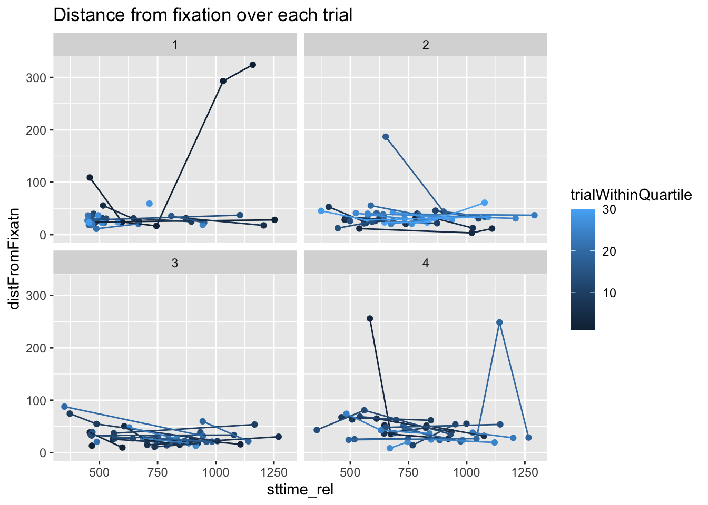
Based on participant M471, minimum distance occurs from about 400 to 800 ms. So we could do drift correction based on that interval.
Zoom in but show outliers in red to indicate they’d be off the scale.
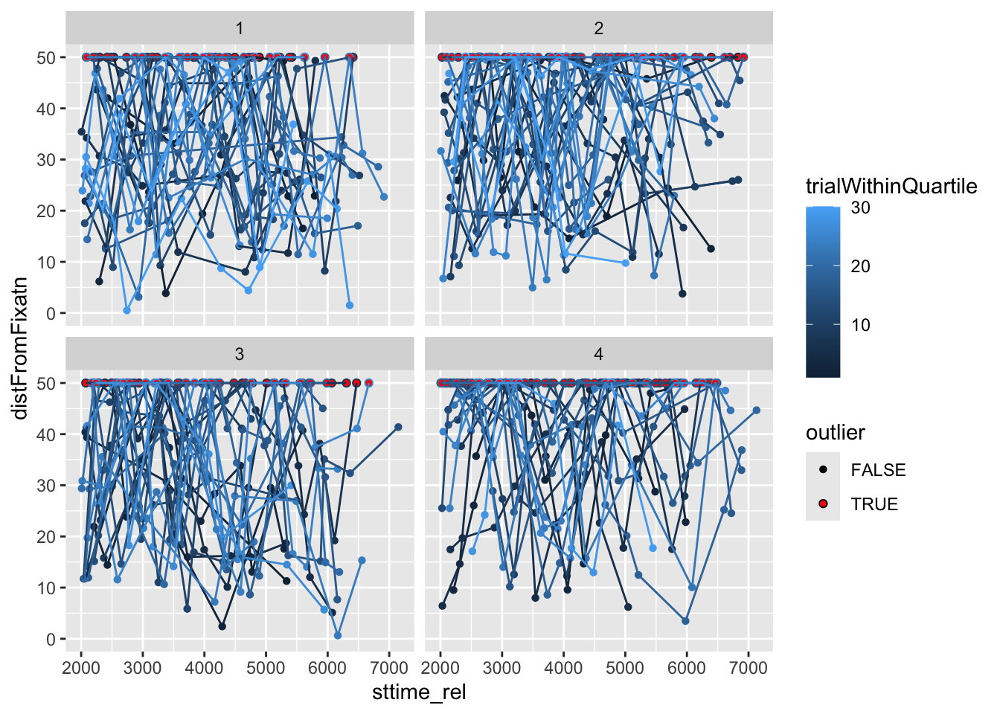
doDriftCorrection =TRUE
intervalToAssumeWasCentral<-c(300,800)
Use intervalToAssumeWasCentral by calculating the average sample position during that interval for each trial. Then subtract that from all the other samples during the trial.
However, should also probably add a check that that value isn’t too far from the center according to the eyetracker, as that would be a sign that probably the person did look away from there on that particular trial.
A more sophisticated algorithm would calculate a running average across several trials to be more robust to eye movements occuring during individual trials.
(could alternatively use the average fixation position rather than sample)
Can’t use samples because it doesn’t have sttime_rel, it only has time_rel which is since the beginning of the recording session so I’d have to get the time markers.
A problem is that some trials have fixations that didn’t start within the interval but did extend into the interval, so shouldn’t just test against sttime_rel. So a criterion to catch fixations that either start or end in the interval can be: * start time being in the interval, or * end time being in the interval,
That still won’t catch fixations that span the entire interval. To catch those, have to test for: * start time being less than interval start AND * end time being greater than interval end
intervalFixatns<- fixatns %>%filter( (sttime_rel > intervalToAssumeWasCentral[1] & sttime_rel < intervalToAssumeWasCentral[2]) |#started during interval (entime_rel < intervalToAssumeWasCentral[2] & entime_rel > intervalToAssumeWasCentral[1]) |#ended during interval (sttime_rel < intervalToAssumeWasCentral[1] & entime_rel > intervalToAssumeWasCentral[2]) #spanned the interval )# Label each fixation based on which type it isintervalFixatns <- intervalFixatns %>%mutate(category =case_when( (sttime_rel > intervalToAssumeWasCentral[1]) & (entime_rel < intervalToAssumeWasCentral[2]) ~"entirelyInInterval", (sttime_rel > intervalToAssumeWasCentral[1] & sttime_rel < intervalToAssumeWasCentral[2]) ~"startedInInterval", (entime_rel < intervalToAssumeWasCentral[2] & entime_rel > intervalToAssumeWasCentral[1]) ~"endedInInterval", sttime_rel < intervalToAssumeWasCentral[1] & entime_rel > intervalToAssumeWasCentral[2] ~"spannedInterval",TRUE~NA_character_# Default case if none of the conditions are met ) )
Plot.
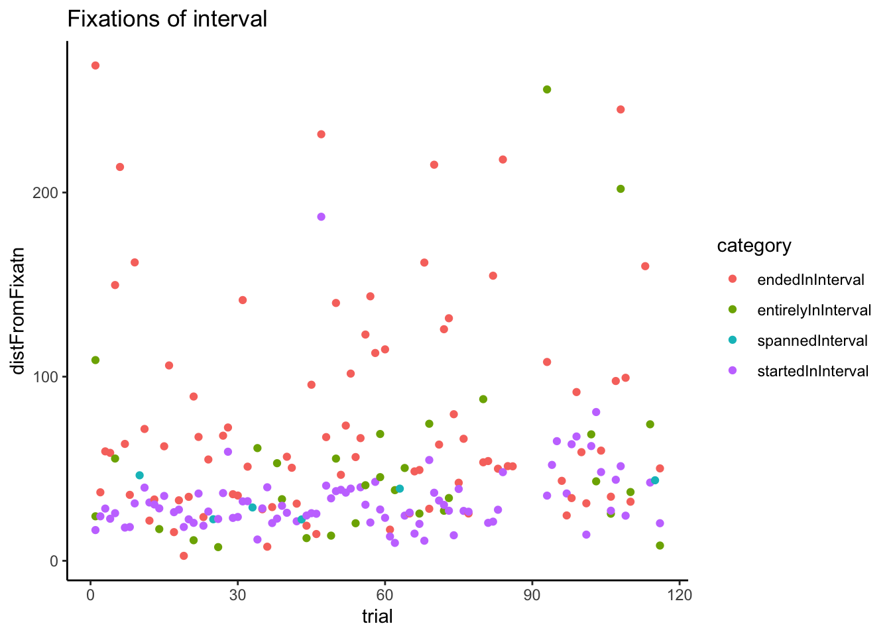
Based on what I see above for M471, the category of ending in the interval is no good, probably because participanat was looking elsewhere at very beginning and shifted to start looking in the right place, lots of large distFromFixatn values, whereas other categories ar OK, although entirelyInInterval not great.
there are a few trials where fiation is more than 40 pixels off during that interval where we can think that probably drift correction based on that is inappropriate, but the vast majority are within 30 pixels, so maybe it’s ok to do drift correction based on them, or based on a running average of them.
Show the results, zoomed in but show outliers in red to indicate they’d be off the scale.
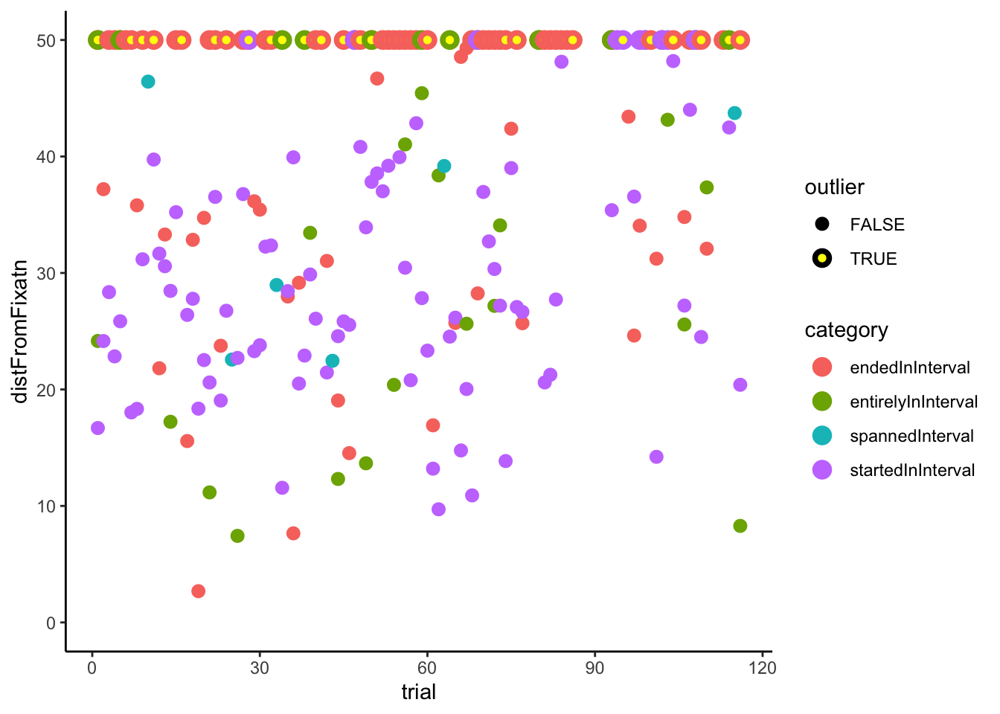
Average fixations of interval for each trial.
Plot
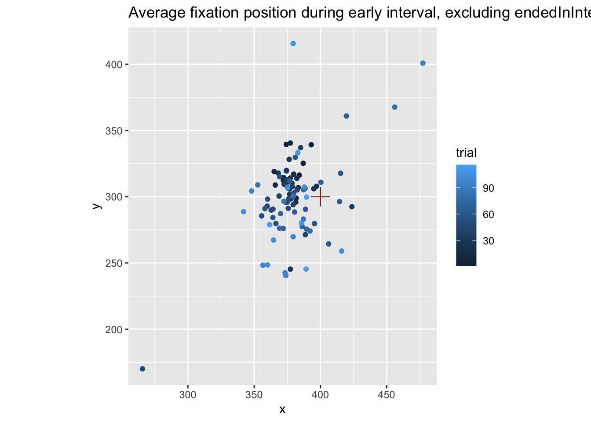
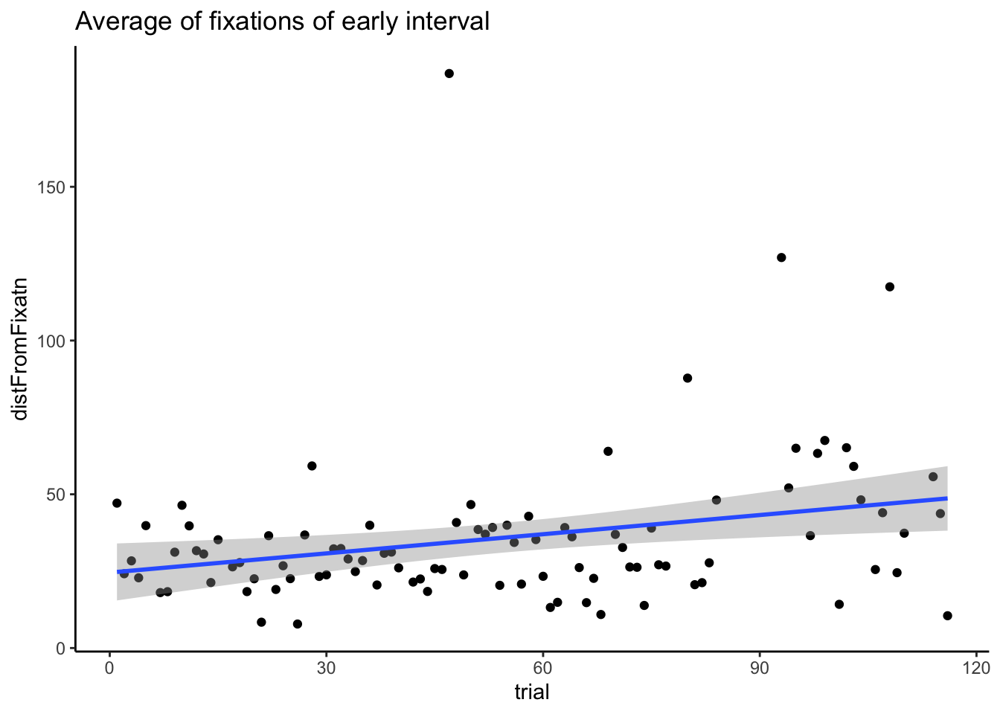
We still have some large values of greater than e.g. 40 that we shouldn’t use for drift correction, so we just won’t use those.
Do drift correction
Calculate the desired drift corrections, excluding ones larger than:
maxDistanceToDriftCorrect<-30
For each trial’s fixations, subtract the drift correction result from the coordinates.
After drift correction, average xDevCorrectd,yDevCorrectd = -15.1,-6.8
Because it's bigger than 15, it suggests the drift correction went very wrong
Average reduction of distance from fixation= 2
Plot histogram of how many pixels distance from fixation reduced thanks to drift correction.
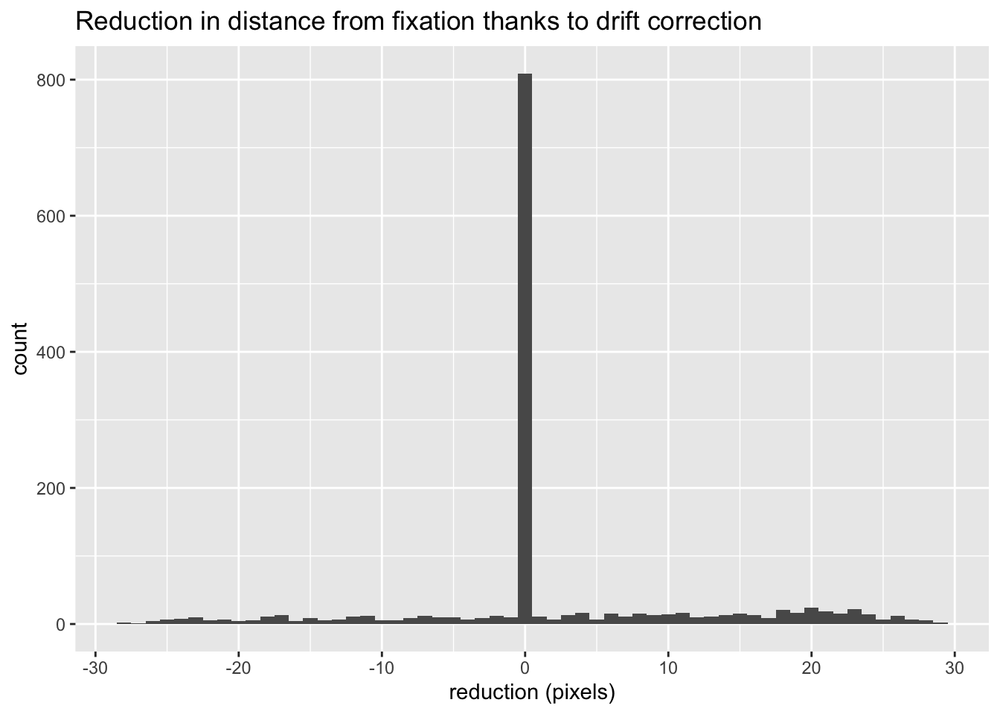
For S451.EDF there are plenty of trials where the reduction is substantial, even though the overwhelming majority of trials is only a few pixels, which is why the average reduction is very small.
Warning: Removed 2 rows containing missing values or values outside the scale range
(`geom_point()`).
Removed 2 rows containing missing values or values outside the scale range
(`geom_point()`).
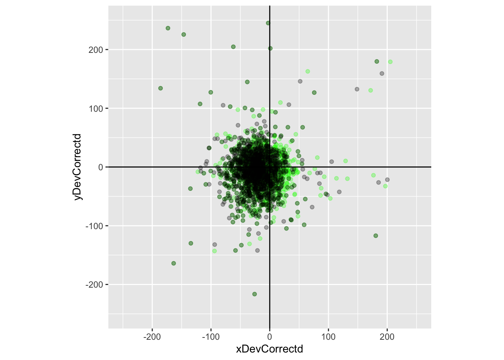
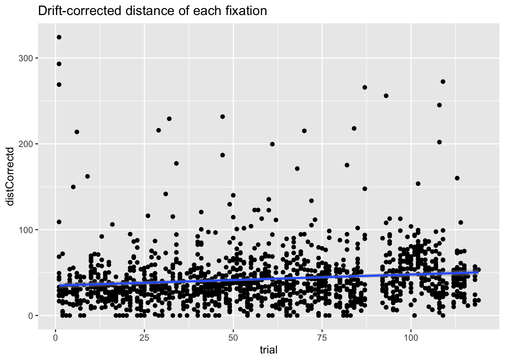
Consider effect of different criteria for excluding trials
Calculate and visualize how many trials will be excluded under various criteria.
Want to have criterion on horizontal axis and proportion trials excluded on vertical axis.
This will require creating a new dataframe because for each trial, need to calculate numCriteria things, meaning the number of rows will expand. One way to do it would be to do a sort of expand_grid where every trial gets duplicated by numCriteria, with criterion a new column. Then, apply whatever is in the criterion column to each row.
Criteria to show the effect of:
distFromCenterCriteria <-c(20,40,60,100,200)
Calculate whether each trial’s distFromFixatn is greater than each criterion
Now calculate proportion of trials tooFar for each criterion. anyTooFar means at least one fixation on a trial was too far away:
Ignoring fixations before trialMinTimeBeforeCuesOff=2000. Drift correction=TRUEwith intervalToAssumeWasCentral=300,800